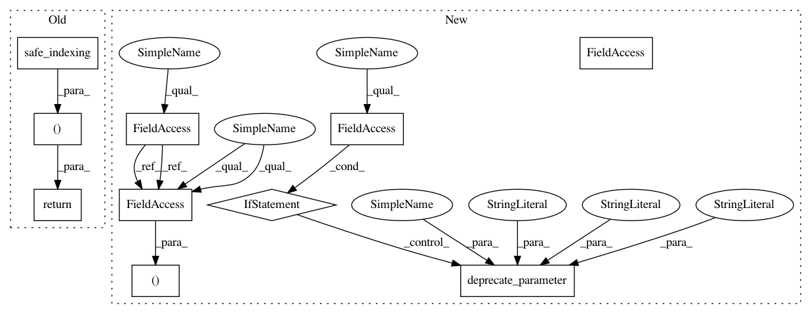

a19d398c1c974eb69d6e8e5e41d65500262089ce,imblearn/under_sampling/_prototype_selection/_tomek_links.py,TomekLinks,_fit_resample,#TomekLinks#Any#Any#,134
Before Change
idx_under = np.flatnonzero(np.logical_not(links))
if self.return_indices:
return (safe_indexing(X, idx_under), safe_indexing(y, idx_under),
idx_under)
else:
return (safe_indexing(X, idx_under), safe_indexing(y, idx_under))
After Change
return links
def _fit_resample(self, X, y):
if self.return_indices:
deprecate_parameter(self, "0.4", "return_indices",
"sample_indices_")
// check for deprecated random_state
if self.random_state is not None:
deprecate_parameter(self, "0.4", "random_state")
// Find the nearest neighbour of every point
nn = NearestNeighbors(n_neighbors=2, n_jobs=self.n_jobs)
nn.fit(X)
nns = nn.kneighbors(X, return_distance=False)[:, 1]
links = self.is_tomek(y, nns, self.sampling_strategy_)
self.sample_indices_ = np.flatnonzero(np.logical_not(links))
if self.return_indices:
return (safe_indexing(X, self.sample_indices_),
safe_indexing(y, self.sample_indices_),
self.sample_indices_)
return (safe_indexing(X, self.sample_indices_),
safe_indexing(y, self.sample_indices_))
In pattern: SUPERPATTERN
Frequency: 3
Non-data size: 10
Instances
Project Name: scikit-learn-contrib/imbalanced-learn
Commit Name: a19d398c1c974eb69d6e8e5e41d65500262089ce
Time: 2018-09-13
Author: g.lemaitre58@gmail.com
File Name: imblearn/under_sampling/_prototype_selection/_tomek_links.py
Class Name: TomekLinks
Method Name: _fit_resample
Project Name: scikit-learn-contrib/imbalanced-learn
Commit Name: a19d398c1c974eb69d6e8e5e41d65500262089ce
Time: 2018-09-13
Author: g.lemaitre58@gmail.com
File Name: imblearn/under_sampling/_prototype_selection/_neighbourhood_cleaning_rule.py
Class Name: NeighbourhoodCleaningRule
Method Name: _fit_resample
Project Name: scikit-learn-contrib/imbalanced-learn
Commit Name: a19d398c1c974eb69d6e8e5e41d65500262089ce
Time: 2018-09-13
Author: g.lemaitre58@gmail.com
File Name: imblearn/under_sampling/_prototype_selection/_tomek_links.py
Class Name: TomekLinks
Method Name: _fit_resample
Project Name: scikit-learn-contrib/imbalanced-learn
Commit Name: a19d398c1c974eb69d6e8e5e41d65500262089ce
Time: 2018-09-13
Author: g.lemaitre58@gmail.com
File Name: imblearn/under_sampling/_prototype_selection/_one_sided_selection.py
Class Name: OneSidedSelection
Method Name: _fit_resample